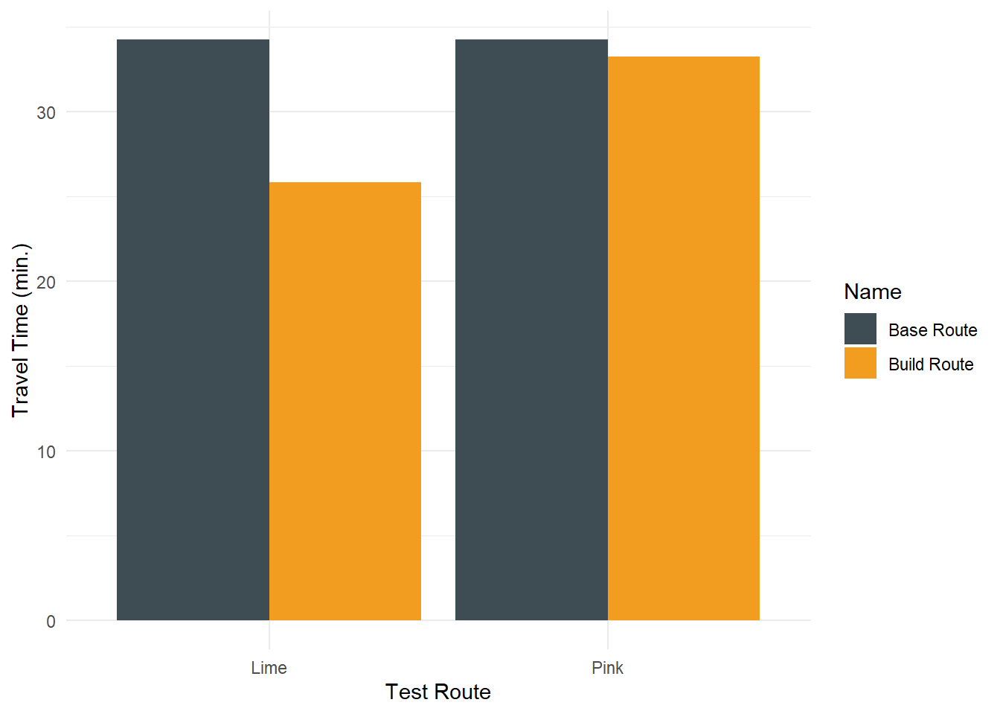

MDOT Chapter 30: Project 24-29 (Montgomery County)
The proposed project, “Great Seneca Ride On extRa,” provides limited-stop transit service service between Shady Grove Metro East and Traville Transit Center in Montgomery County, Maryland. Service is provided on two separate alignments: the Pink Route and the Lime Route
Figure 1. Proposed Montgomery County Service
## Loading basemap 'light_only_labels' from map service 'carto'...## Loading basemap 'light_no_labels' from map service 'carto'...
Report Table of Contents
The analysis of Project XX-XX required developing General Transit Feed Specification (GTFS) files to model the proposed fixed route bus service.
The following sections of this report describe service characteristics encoded into the GTFS files.
Alignment and Service Characteristic
The project provides new service along two alignments between Shady Grove Metro East and Traville Transit Center.
Pink Line: Establishes a connection from the bustling Shady Grove corridor to the Life Sciences Center via Medical Center Drive, with a round-trip travel time estimate is 66:30.
Lime Line: Provides an express service along I-370 to RIO, Crown Farm, and central locations within the Life Science Center, with a round-trip travel time estimate of 51:43.
Dedicated bus lanes will be constructed along existing curbside lanes to enhance travel times and improve reliability. Right-turning vehicles will be permitted to use these lanes at designated intersections. Transit Signal Priority (TSP) will be implemented at key intersections along the Pink Line.
The following maps depicts station locations and route alignment developed to calculate travel distances and travel times for coding the proposed service into a GTFS feed.
Details of how the proposed service is represented in GTFS are provided below by describing four key tables in the feed: Stops.txt, Trips.txt, Stop_times.txt, and Frequencies.txt. Other tables in the new XX-XX feed are based on standard tables defined in the Chapter 30 Transit Accessibility Scoring Guide (“GTFS feed validation” section) and are not described here.
Attributes
The attributes of the base multimodal network were modified through the addition of the newly developed GTFS feed modeling Project XX-XX. The details of how Project XX-XX was represented in GTFS are provided below by describing four key tables of the feeds: Stops.txt, Trips.txt, Stop_times.txt, and Frequencies.txt.
Other tables in the new project feed are based on standard tables defined in the Chapter 30 Transit Accessibility Scoring Guide (“Standard GTFS Tables” section) and are not described here.
Stops.txt
Table 1. Stops Table
| stop_id | stop_code | stop_name | stop_desc | stop_lat | stop_lon |
|---|---|---|---|---|---|
| pink1 | pink1 | SHADY GROVE METRO STATION - EAST (Bay F) | Shady Grove Metro Station - East | 39.12078 | -77.16335 |
| pink2 | pink2 | SHADY GROVE RD AT CRABBS BRANCH WAY | Westside at Shady Grove | 39.12878 | -77.16753 |
| pink3 | pink3 | SHADY GROVE RD AT CHOKE CHERRY RD | Rockville - Choke Cherry Crossing | 39.11463 | -77.18572 |
| pink4 | pink4 | SHADY GROVE RD AT CORPORATE BLVD | Shady Grove Corporate Center | 39.10752 | -77.18947 |
| pink5 | pink5 | OMEGA DR AT RESEARCH BLVD | Crown - East | 39.10706 | -77.19523 |
| pink6 | pink6 | MEDICAL CENTER DR AT JHU | Life Sci - East | 39.10337 | -77.19646 |
| pink7 | pink7 | MEDICAL CENTER DR AT MEDICAL CENTER WAY | Shady Grove Medical Center- South | 39.09771 | -77.19590 |
| pink8 | pink8 | TRAVILLE TRANSIT CENTER UNIVERSITY OF SHADY GROVE | Traville Transit Center | 39.09273 | -77.20242 |
| lime1 | lime1 | SHADY GROVE METRO STATION - EAST (Bay E) | Shady Grove Metro Station - East | 39.12078 | -77.16335 |
| lime2 | lime2 | FIELDS RD AT RIO BLVD | Downtown Crown/Rio Washingtonian Center | 39.11578 | -77.20383 |
| lime3 | lime3 | DECOVERLY DR AT CROWN PARK AVE | Crown - Central | 39.11111 | -77.20120 |
| lime4 | lime4 | DIAMOND DR AT DECOVERLY DR | Decoverly | 39.10693 | -77.20302 |
| lime5 | lime5 | BROSCHART RD AT JHU | Life Sci - West | 39.10320 | -77.19993 |
| lime6 | lime6 | BROSCHART RD AT MEDICAL CENTER WAY | Shady Grove Medical Center - West | 39.09899 | -77.20167 |
| lime7 | lime7 | TRAVILLE TRANSIT CENTER UNIVERSITY OF SHADY GROVE | Traville Transit Center | 39.09273 | -77.20242 |
Trips.txt (vehicle-trip enumeration)
The trips file represents a single route with a seven-day travel profile. The scoring methodology is based around peak AM travel times. The feed was only developed to represent this time period and the associated frequencies and characteristics.
Table 2. Trips Table
| route_id | service_id | trip_id | trip_headsign | trip_short_name | direction_id | block_id | shape_id | wheelchair_accessible | bikes_allowed |
|---|---|---|---|---|---|---|---|---|---|
| gstn_express | MTWTF | pink_sb | NA | NA | NA | NA | NA | NA | NA |
| gstn_express | MTWTF | pink_nb | NA | NA | NA | NA | NA | NA | NA |
| gstn_express | MTWTF | lime_sb | NA | NA | NA | NA | NA | NA | NA |
| gstn_express | MTWTF | lime_nb | NA | NA | NA | NA | NA | NA | NA |
Stop_times.txt (transit schedule)
The stop times table was developed by determining an average travel speed based on the travel time and approximate length of the line.
Table 3. Stops Times Table
| trip_id | arrival_time | departure_time | stop_id | stop_sequence |
|---|---|---|---|---|
| pink_sb | 06:01:00 | 06:01:00 | pink1 | 1 |
| pink_sb | 06:09:50 | 06:09:50 | pink2 | 2 |
| pink_sb | 06:17:37 | 06:17:37 | pink3 | 3 |
| pink_sb | 06:20:13 | 06:20:13 | pink4 | 4 |
| pink_sb | 06:22:49 | 06:22:49 | pink5 | 5 |
| pink_sb | 06:24:54 | 06:24:54 | pink6 | 6 |
| pink_sb | 06:26:27 | 06:26:27 | pink7 | 7 |
| pink_sb | 06:34:15 | 06:34:15 | pink8 | 8 |
| pink_nb | 06:01:00 | 06:01:00 | pink8 | 1 |
| pink_nb | 06:08:48 | 06:08:48 | pink7 | 2 |
| pink_nb | 06:10:21 | 06:10:21 | pink6 | 3 |
| pink_nb | 06:12:26 | 06:12:26 | pink5 | 4 |
| pink_nb | 06:15:02 | 06:15:02 | pink4 | 5 |
| pink_nb | 06:17:37 | 06:17:37 | pink3 | 6 |
| pink_nb | 06:25:25 | 06:25:25 | pink2 | 7 |
| pink_nb | 06:34:15 | 06:34:15 | pink1 | 8 |
| lime_sb | 06:01:00 | 06:01:00 | lime1 | 1 |
| lime_sb | 06:09:58 | 06:09:58 | lime2 | 2 |
| lime_sb | 06:17:53 | 06:17:53 | lime3 | 3 |
| lime_sb | 06:20:31 | 06:20:31 | lime4 | 4 |
| lime_sb | 06:23:09 | 06:23:09 | lime5 | 5 |
| lime_sb | 06:25:16 | 06:25:16 | lime6 | 6 |
| lime_sb | 06:26:51 | 06:26:51 | lime7 | 7 |
| lime_nb | 06:01:00 | 06:01:00 | lime7 | 1 |
| lime_nb | 06:02:35 | 06:02:35 | lime6 | 2 |
| lime_nb | 06:04:42 | 06:04:42 | lime5 | 3 |
| lime_nb | 06:07:20 | 06:07:20 | lime4 | 4 |
| lime_nb | 06:09:58 | 06:09:58 | lime3 | 5 |
| lime_nb | 06:17:53 | 06:17:53 | lime2 | 6 |
| lime_nb | 06:26:51 | 06:26:51 | lime1 | 7 |
Frequencies.txt (frequency of recurring trips)
A frequencies table was developed to model the headways of the line during weekday AM peak travel times. The table defines a start and end time for a headway, with each headway associated with a trip ID. The headways are provided in seconds. The trip IDs link the headway times to the individual trips that comprise the route described in the trips.txt file. When frequencies table is used, the stop times file defines a template of stop sequences and travel times between stops, and the frequencies table defines the interval of recurrence for each trip following the stop times template.
Table 4. Frequencies Table
| trip_id | start_time | end_time | headway_secs | exact_times |
|---|---|---|---|---|
| pink_sb | 06:00:00 | 10:00:00 | 600 | NA |
| pink_nb | 06:00:00 | 10:00:00 | 600 | NA |
| lime_sb | 06:00:00 | 10:00:00 | 900 | NA |
| lime_nb | 06:00:00 | 10:00:00 | 900 | NA |
Network
The following maps depict the GTFS feed for both base service as well as proposed service represented as a routable network. While the alignment was used to develop route distances and speeds, the resulting GTFS-derived network represents transit service as straight lines between stops, with the associated scheduling information that was built around the specific alignments associated with each segment.
Figure 2. Base Network

Figure 3. Build Network

Network Dataset Configuration
The multi-modal network is composed of five features classes:
“TransitLines” represents vehicle trips between transit stops;
“Stops” represents transit stops served by transit vehicles;
“L3_HWY” represents the local street network for access to/egress from transit stops;
“Stops_Snapped2Street” represents each transit stop as a location “snapped” to the “Streets_UseThisOne” features;
“Connectors_Stops2Street” represents the connections from the L3_HWY features to the transit Stop locations via the Stops_Snapped2Street junctions.
These features are grouped into three “connectivity groups” that enforce appropriate routing for transit network problems. Modeled paths must begin on the streets (“Streets_UseThisOne”) network (column 1) and can proceed to the transit lines (column 3) via the Connectors_Stops2Streets features (column 2). The network edge features are connected through the Stops (column 2-column 3) and the Stops_Snapped2Streets (column 1-column 2) node features. Figure 6 below shows the connectivity topological rules applied to the development of the build scenario multimodal network.
Travel times between zones are computed using a travel time evaluator, setup for the build scenario multimodal network in Network Analyst as shown in Figure 7. A 3 mph (264 feet per minute) walk speed is assumed and the transit evaluator computes time-of-departure-specific transit travel times using the GTFS schedule.
Figure 6. Coding Assumptions 
Figure 7. Network Minutes Evaluators 
Connectivity Tests
There are several steps required to create a multi-modal network, presenting opportunities for user error or technical anomalies to mis-represent network connectivity. To test the connectivity and usability of the proposed servcie in the network, two quality control tests were performed: Service area analysis and routing analysis. These tests are described below. All test cases are based on an assumed peak morning service on a typical Wednesday.
Service Area Test
Figures 8 and 9 show the result of the service area analysis. The maps visualize travel time isochrones for a single location within the project study area for the base network and the build network with the proposed fixed route bus service. Service is tested from Shady Grove Metro Station
A comparison between the service areas shows a measurable increase of service relative to the location used in the test, when the new service is introduced. These changes confirm that Project XX-XX is appropriately integrated into the base multimodal network.
Figure 8. Base Service Area

Figure 9. Build Service Area
## Loading basemap 'light_only_labels' from map service 'carto'...
Route Test
Figures 10 compares two shortest path routing tests, one for each route. Tests are conducted between southbound, from the Shady Grove Metro Station to The Universities at Shady Grove. The tests confirms the network is utilizing the new path the service creates.
In the no-build Lime network, the shortest path between Shady Grove Metro Station to The Universities at Shady Grove was similar to the alignment used by the Pink route. In the build network, the shortest path uses the new alignment of I-370 and Fields Road. The build network provides shorter transit route by using higher speed facilities. The shortest path for the Pink route changes only slightly but can best be seen where the route now crosses Montgomery Ave on Omega Drive instead of making a right hand turn. While this build route is slightly longer than the build route it does add an additional stop on Omega Drive.
The test also shows a slight travel time reduction after the addition of Project XX-XX for the Lime route. The test no-build route takes approximately 25 minutes to traverse, while the build route takes 24 minutes. The Pink Route takes approximately 5 minutes longer to traverse, but the addition of a new stop does require the use of slower speed facilities and taking a more circuitous route.
Figure 10. Route test comparison

Figure 11. Route test travel time: build vs. no-build

Table 5. Route test travel time: build vs. no-build
| Test Route Direction | Scenario | Travel Time (min.) |
|---|---|---|
| Lime | Base Route | 24.70 |
| Pink | Base Route | 20.32 |
| Lime | Build Route | 24.27 |
| Pink | Build Route | 25.45 |
Extent of Study Area
The project study area is based on travel time to the zones in which the project is implemented – any zones within 45 minutes by transit (in the project build scenario) are part of the study area as are any zones within 15 minutes by driving (based on MSTM highway skims).
Figure 11. Project Study Area Counties


Table 6. Project Study Area Counties
| County | Sq. Miles in Study Area |
|---|---|
| Montgomery | 223.69 |
| Total | 223.69 |
Travel Time Contours to Project
The service area analysis shows that Project xx-xx brings more of the study area within a one-hour travel time by transit.
MMA Results
Figure 12-13. No-Build and Build Jobs Accessibility in the Study Area

Network
Project Links and Stops
Figure 14. Project Links and Stops

TAZ
The MMA results show an increase in the number of jobs accessible by transit when compared to the no build option. In the build scenario, portions of the study area see an increase in job accessibility ranging from 0 to 296,840.
Project Study Area
Figure 15. Project Study Area

Accessibility Changes
Figure 16. Change in Accessibility between No-Build and Build scenarios in Study Area

Project findings
As shown in Figure 16, the largest increases in job access occur in the TAZs in closest proximity to new stops in the build scenario. The addition of project increased the number of accessible jobs for the general population by 1,890. There is also an accessibility increases for the disadvantaged population of 1,890. The following table summarizes final findings for Project xx-xx
Table 7. Project Finding
| Measure | 2023 |
|---|---|
| Access to Jobs in Base (general population) | 93,633.00 |
| Access to Jobs in Build (general population) | 95,523.00 |
| Change in Access to Jobs (general population) | 1,890.00 |
| Access to Jobs in Base (disadvantaged population) | 80,903.00 |
| Access to Jobs in Build (disadvantaged population) | 82,793.00 |
| Change in Access to Jobs (disadvantaged population) | 1,890.00 |
| Change in Average Travel Time Per Trip (minutes) | 0.16 |
| Estimated Ridership | 30,000.00 |
| Estimated Existing Ridership (Estimated Ridership * 80%) | 24,000.00 |
| Total Estimated Travel Time Savings for Existing Transit Riders (Change in Average Travel Time Per Trip * Estimated Existing Ridership) | 3,840.00 |